Chapter 2:Pipeline
1. What is pipeline
从两个角度进行加速：对每一条指令进行加速；对一段程序的执行进行加速
机制上，先进行分段，每一段用不同的部件，就可以并行执行。我们用buffer存放各个阶段的中间结果
执行的模式有三种 - Sequential execution - Single overlapping execution - Twice overlapping execution
1.1 Sequential execution
没有流水线的时候每一条指令顺序执行，执行时间就是每一条指令的每个阶段时间求和
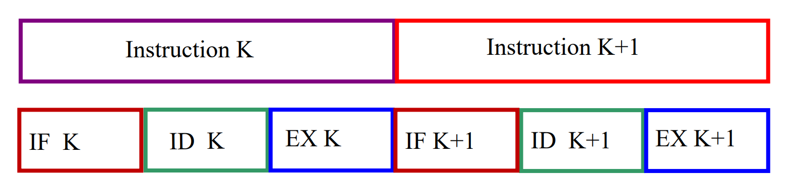
时间就是所有指令时间之和
1.2 Overlapping execution
重叠执行，如果不同阶段时间不一致，如ID阶段时间较长，那么需要等待浪费资源；如果EX阶段时间较长，那么产生冲突，执行部件不够。
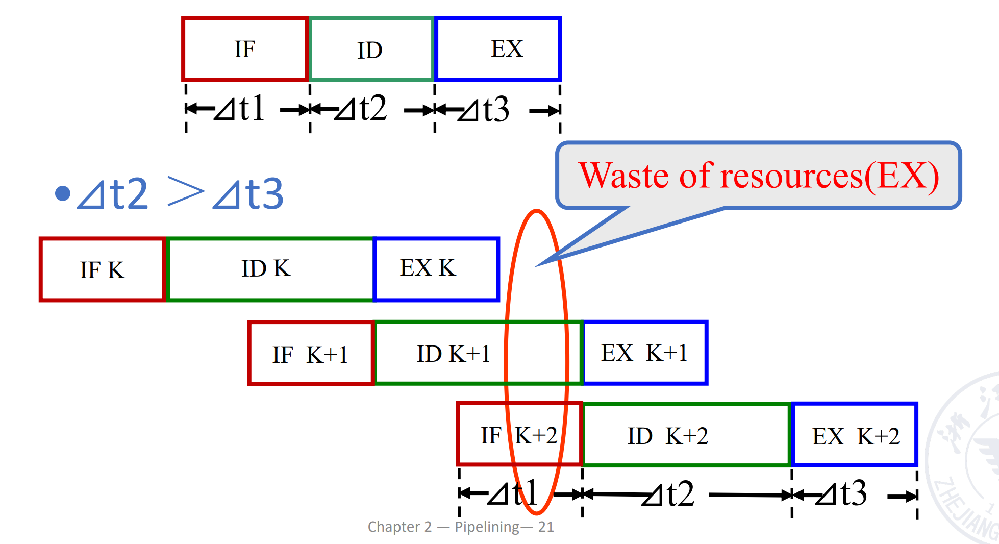
- ID阶段的时间较长，那么其他阶段的执行单元会等待，资源就会浪费
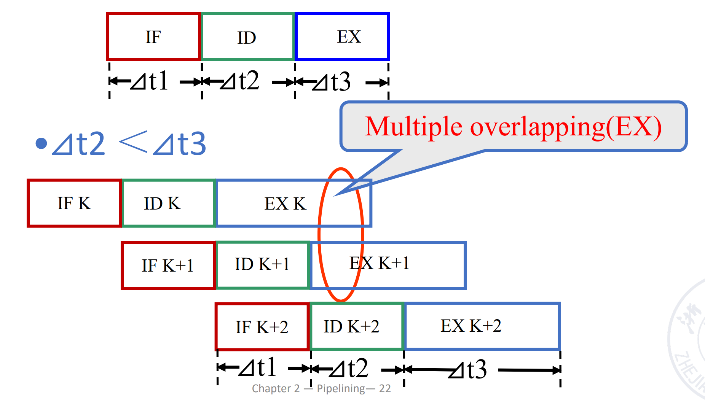
- EX阶段时间较长，可能会出现执行单元不够用的情况，导致流水线堵塞
理想情况下是让三个阶段的时间相等
- Single Overlapping
- 相较于顺序执行，时间缩短$\frac13$，同时功能部件的利用率得到明显改善
- 提高了硬件开销(增加功能单元以用来调度流水线)，而且有冒险(由于指令之间存在依赖关系可能产生冲突)
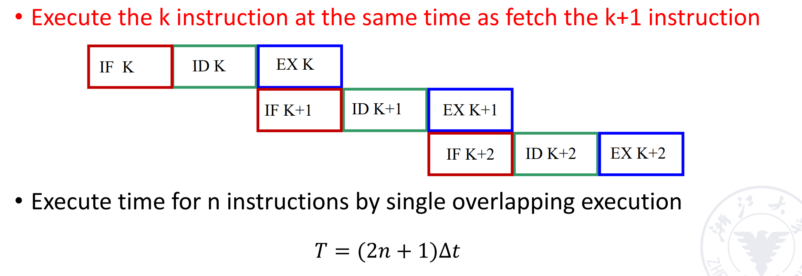
-
Twice Overlapping
- 时间可以减少近$\frac23$，部件利用率更高 需要更复杂的硬件，而且需要单独的Fetch Decode EXE部件
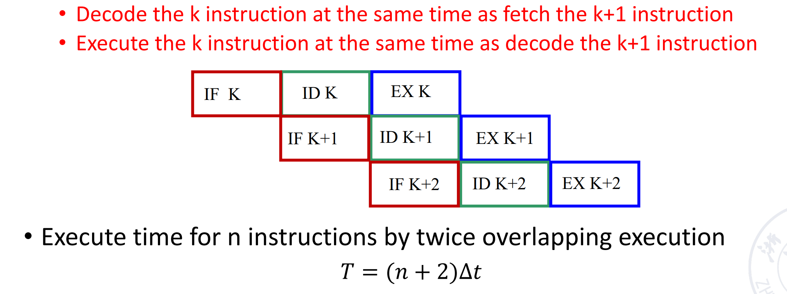
1.3 如何实现重叠？- buffer
Adding instruction buffer between memory and instruction decode unit.直接在buffer中取指，大大缩短取指时间。
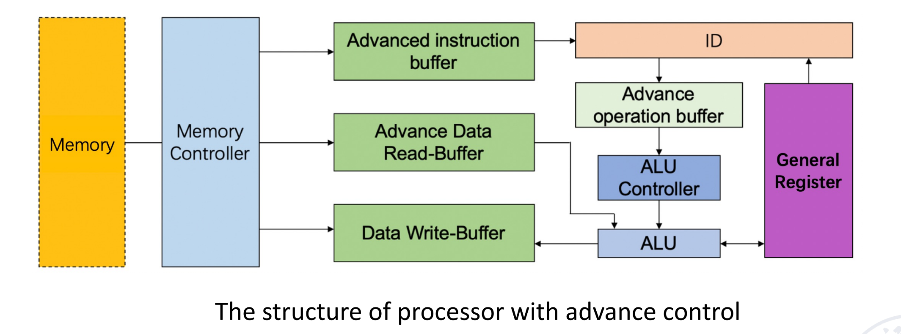
- 使取数、存数、传输等操作的时间大大缩短，使所有执行时间都集中在ALU无法缩短
The structure of processor with advanced control
添加 buffer 之后，IF 阶段时间变得很短，此时可以和 ID 阶段合并（把二次重叠变为了一次重叠）。
- 时间接近变为原来的一半
如果合并之后IFID和EX阶段时间不一致，也会有执行部件的浪费。
- 我们的目标是使ALU计算单元在较长时间内处于工作状态也就是EX阶段尽量不等待
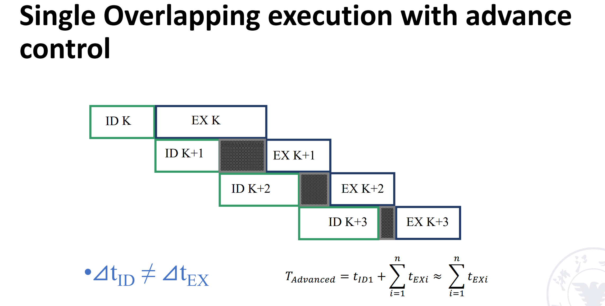
Common features: They work by FIFO, and are composed of a group of several storage units that can be accessed quickly and related control logic.
可以看到，添加 buffer 之后，ID 阶段不用等待 EX 阶段技术才能进行下一条的译码，因为 ID 阶段的结果已经存放在 buffer 中了。这给ID创造了能够读取下一条指令的机会
1. buffer的引入
- 存放阶段间的中间结果，避免由于下一阶段的执行时间较长而导致前一个阶段需要等待
- 当IF阶段完成取指后，立即将指令放入buffer中，而不需要等待ID阶段完全解码完成。这样IF阶段可以尽快开始下一条指令的取指，增加了流水线的并行度
2. buffer优化流水线
- 减少等待时间：即使EX阶段耗时较长，ID阶段也不需要等待EX阶段完全执行完毕，因为ID阶段可以将解码结果暂时存放在buffer中
- 提高吞吐量：通过buffer来存储各个阶段的临时结果，允许流水线继续向前推进，减少了各阶段之间的执行时间差异对流水线效率的影响
- 缓冲区机制(FIFO)：确保数据按照正确的顺序传递到下一个阶段。FIFO的硬件实现不仅包括存储单元，还需要一些控制逻辑来管理数据的读取和写入
添加buffer之后，IF阶段时间变得很短，此时可以和ID阶段合并(把二次重叠变为了一次重叠)
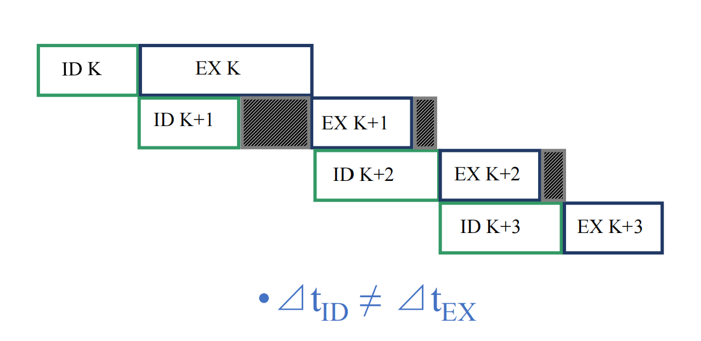
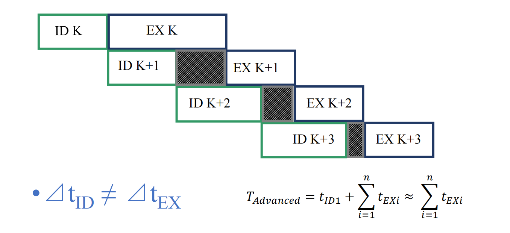
- 添加buffer之后ID不用等待EX阶段结束之后才进行下一条指令的译码，因为ID阶段的结果已经存放在buffer中了
2. Classes of poplining
Charasteristics of pipelining:
- 单功能流水线：只有一个固定功能的流水线。涉及仅针对单一类型的运算
- 多功能流水线：流水线的每个部分以不同的方式连接(不同阶段进行灵活组合)可以实现不同的功能
- 使处理器能够更灵活地分配计算资源
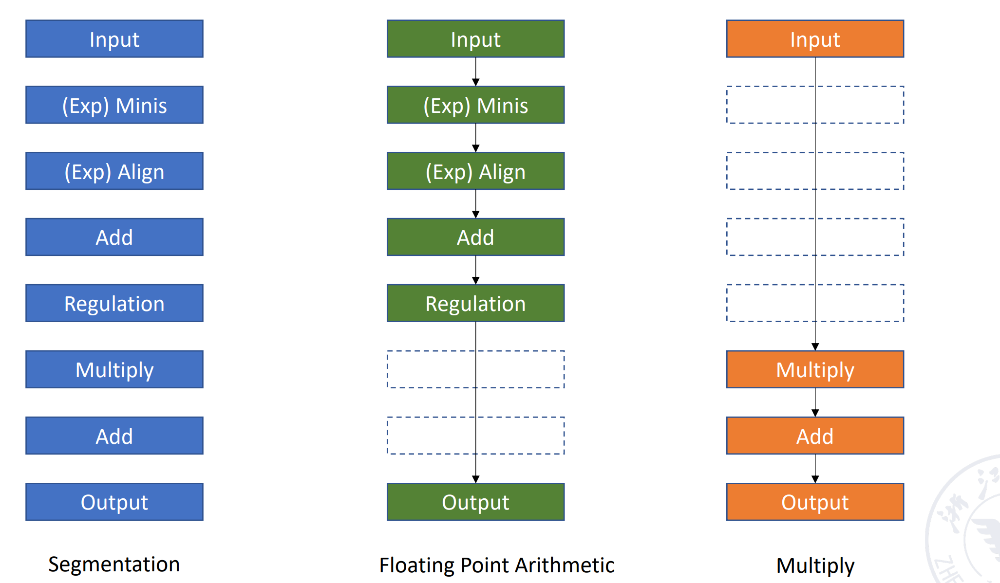
针对多功能流水线的划分
- 静态流水线：同一个时刻流水线只能做一个功能。流水线的功能同一时刻是固定的
例如在刚刚的例子中，流水线要么做浮点加法要么做乘法
- 动态流水线：同一个时刻可以做多个功能。可以不用等待浮点加法第n条结束(即某一任务完全排空)，就可以开始乘法
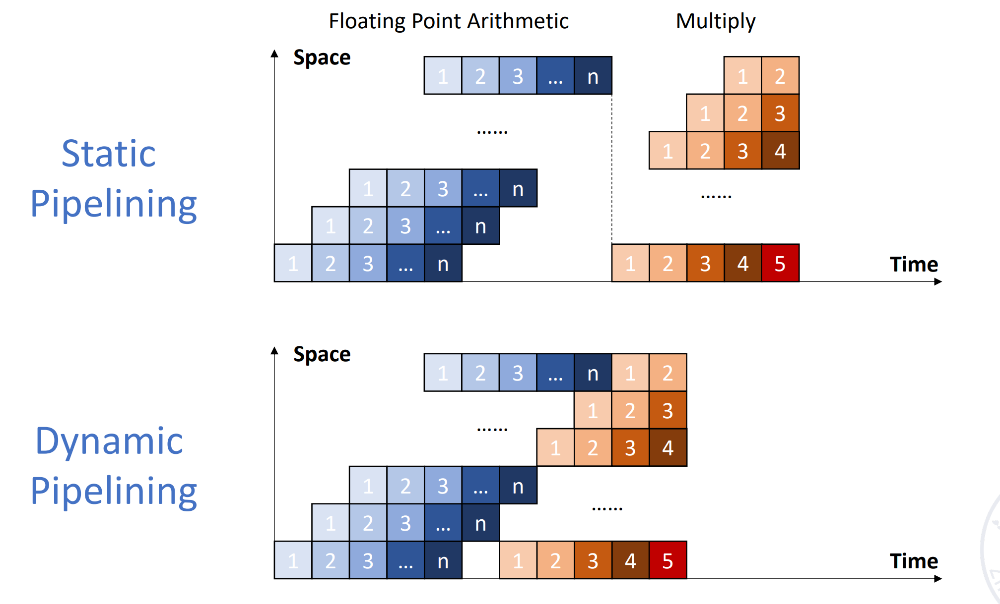
从不同的粒度分类：
- Component level pipelining (in component - operation pipelining)：处理器内部组件内进行的流水线操作。例如，在同个ALU钟可以通过流水线技术让不同操作的各个阶段并行进行
- Processor level pipelining (inter component - instruction pipelining):跨多个处理器组件的流水线操作，通常是指指令集的流水线。不同的指令在不同组件中进行取指、解码、执行等操作
- Inter processor pipelining (inter processor - macro pipelining)：更大规模的流水线设计，涉及多处理器或多核系统。在这种架构下，不同的处理器(或核)处理不同部分的任务
还可以分为线性或者非线性：
- Linear pipelining:不存在功能部件的回路，指令一依次在流水线的各个阶段中处理，每个阶段只进行一次运算，数据不会返回到之前的阶段。指令从一端流入，处理完毕后从另一端流出。
- Nonlinear pipelining:功能部件可能多次使用，造成回路
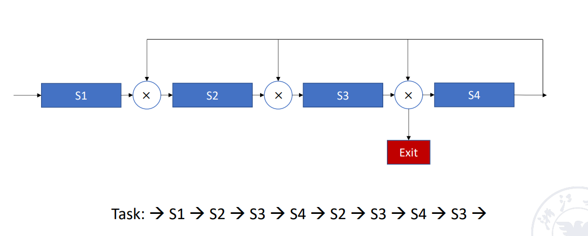
还可以分为顺序/乱序：
- ordered pipelining：指令进出流水线的顺序相同，指令的执行顺序和完成是确定视为
- disordered pipelining：进来和流出的顺序不一样。后面的指令与前面的指令无关，则可以先出来，不能则要等待。
Tips
- 乱序执行但是最后通过某些机制进行顺序调整,输出时依然按照流入顺序流出
- 当流水线因为某一条指令堵塞时，处理器可以执行后续的指令，而不会导致整条流水线的停顿
还可以分为向量/标量处理器
-
scalar processor：每次只能处理单一的数据元素。它的指令处理数据都是标量，意味着每条指令处理一个数据值。
-
vector processor：The processor has vector data representation and vector instructions. It is the combination of vector data representation and pipelining technology.采用向量指令处理多个数据元素(即一个向量)而不是单个标量。向量流水线的设计结合了向量数据表示与流水线技术，每次执行一条指令时处理的数据量非常大
3. Performance evaluation of pipelining
3.1 Throughput
流水线希望我们提高单位时间内处理的任务越多越好，即提高吞吐率
- 目的是提高处理的任务数，而不是减少时间
Throughput(TP) $$ TP=\dfrac{n}{T_K}<TP_{max} $$
(实际上TP会有损耗) - n是指令数 - $T_k$是流水线总的执行时间
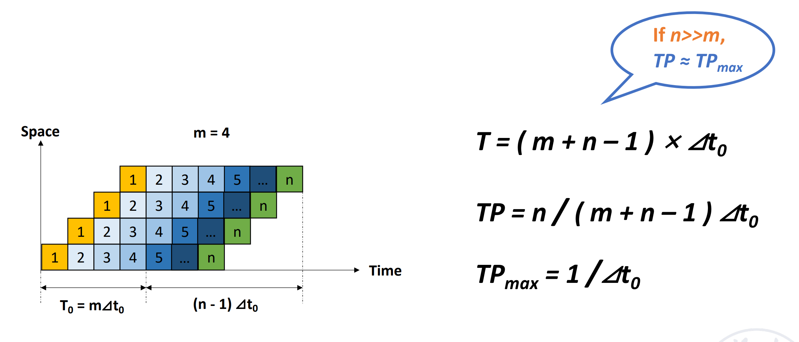
$$ TP=\dfrac{n}{n+m-1}TP_{max} $$
- $n>>m, TP\approx TP_{max}$
Suppose the time of segments are different in pipelining, then the longest segment in the pipelining is called the bottleneck segment.
Example Time of S1,S3,S4:$\Delta t$ Time of S2:$\Delta 3t$(Bottleneck)
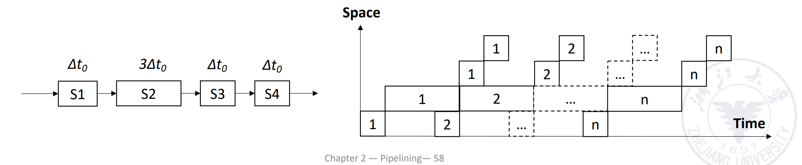
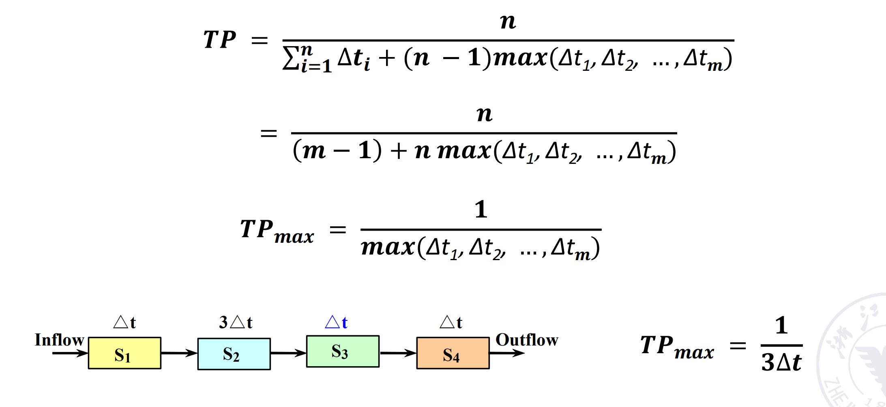
$TP_{max}$只和瓶颈段的时间有关
3.1.1 Common methods to solve pipeline bottleneck
- Subdivision 把瓶颈分成若干段执行
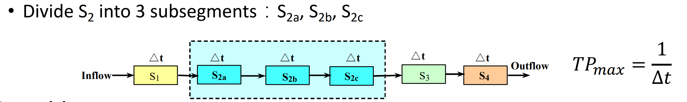
- Repetition 在瓶颈段多使用几个部件
3.2 Speedup
$$ SP=\frac{n \times m}{m+n-1} $$
- if $n>>m,Sp_{max} \approx m$
3.3 Efficiency
效率，从计算机部件的角度：纵轴代表使用的不同的功能部件。效率指的是我们真正使用这个部件占整个时空的百分比。 - 流水线中硬件资源的利用率
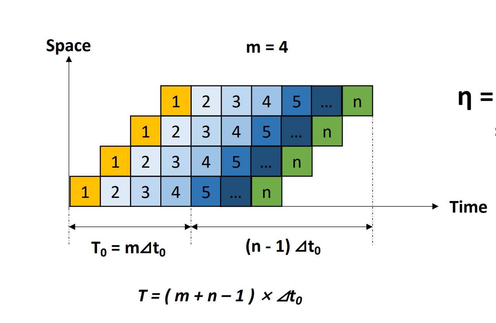
$$ η=\frac{n \times m \times \Delta t_0}{m \times(n+m-1) \times \Delta t_0}=\frac{n}{m+n-1} $$ - 注意效率得到的结果应该是百分比，之前是吞吐量、加速比都是没有量纲的数 - if $n>>m, η\approx 1$ 实际上不可能为1，流水线进入和排空的时间是不可以忽略的3.4 Pipeline Performance
- vector Calculation in static Pipeline
现在有两个向量 A 和 B，我们要计算 A 点乘 B，通过下面的动态双功能流水线运算。
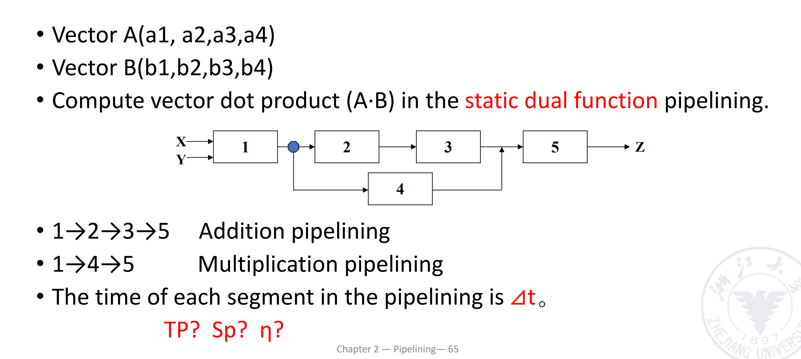
注意到这里是静态流水线，同一时刻只能做一类事情，需要先完成一种操作再完成另一种。这里我们需要先做乘法，排空，再做加法。做加法时，第三个乘法的结果需要等前两个乘法的结果相加后，再计算。
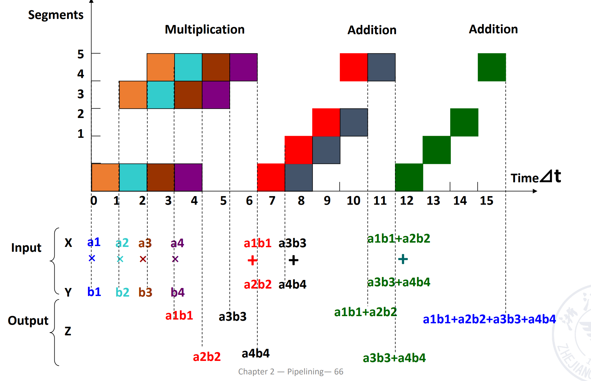
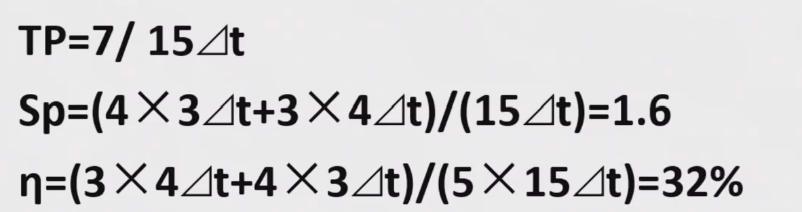
- vector Calculation in dynamic Pipeline
动态流水线，可以在前一个功能还没有做完的时候执行另一个功能，不需要排空。
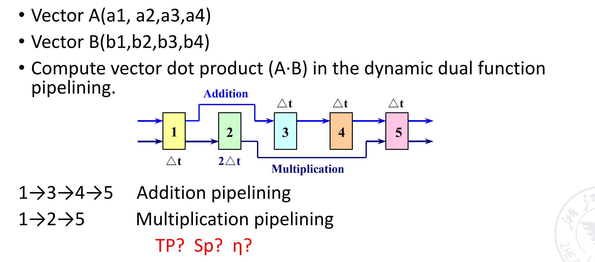
这里当两个乘法的结果算出来之后，就可以执行对应的加法。
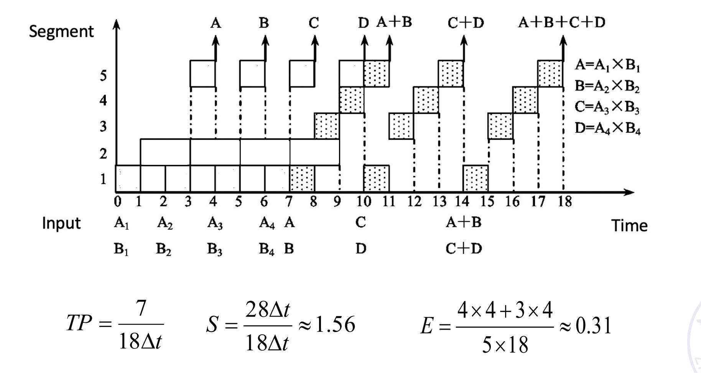
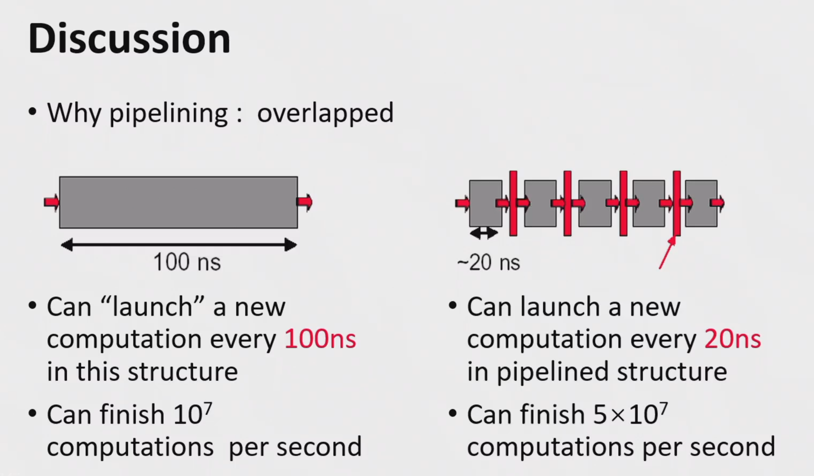
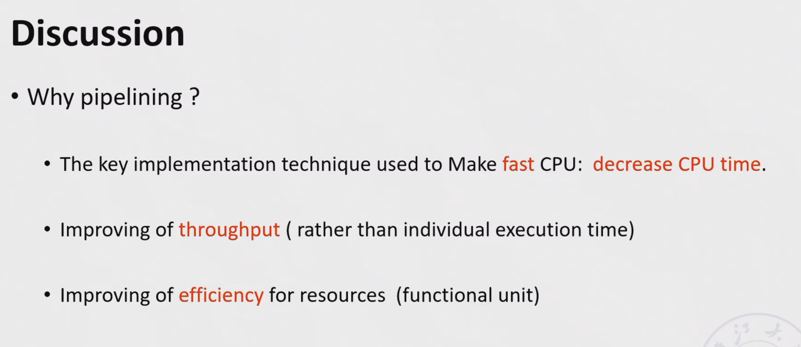
- 如果各个阶段是完全平衡的，每条指令的执行时间就是每个阶段所需要的时间，所以理想情况下的加速比也就是流水线的阶段数
- Too many stages
- Lots of complications：流水线调度复杂，控制逻辑复杂
- Should take care of possible dependencies among in-flight instructions
- Control logic is huge
- 导致性能瓶颈的产生
- 硬件要求提高 流水线的性能有关：动态（不需要排空，但需要硬件支持）还是静态，流水线段数，代码质量（冒险）
4. Hazards of Pipeline
- structure hazards:A required resource is busy
- data hazard:need to wait for previous instruction to complete its data read/write.
- control hazard: Deciding on control action depends on previous instruction.
4.1 structure hazards
对结构的争用,资源存在冲突
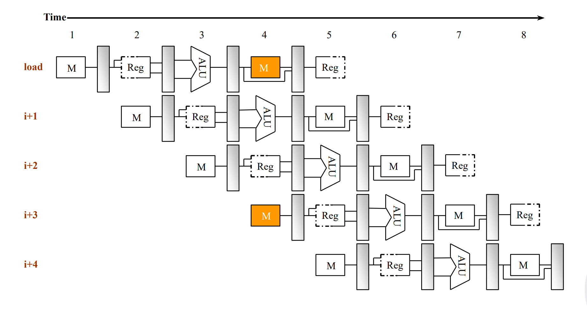
- 一般通过加bubble或者加硬件进行解决（满足需求），或者同一块memory区分不同的cache
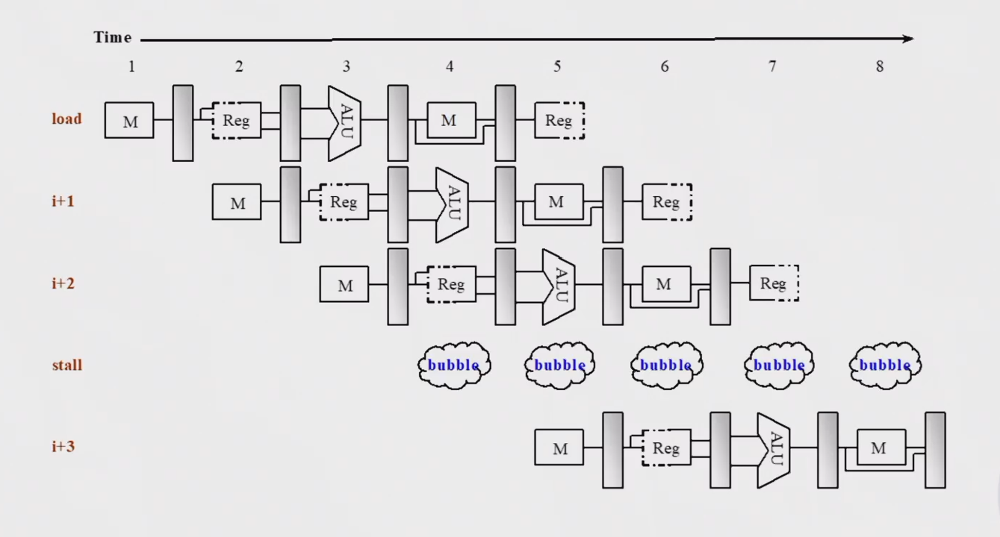
4.2 data hazard
一条指令的执行依赖于前面指令对于数据访问的完成
可以加 bubble, 或者通过 forwarding 前递数据，但并不是所有的情况都可以解决。
- Read After Write (RAW)
FADD.D F6,F0,F12 FSUB.D F8,F6,F14
Forwarding解决这种类型的冒险
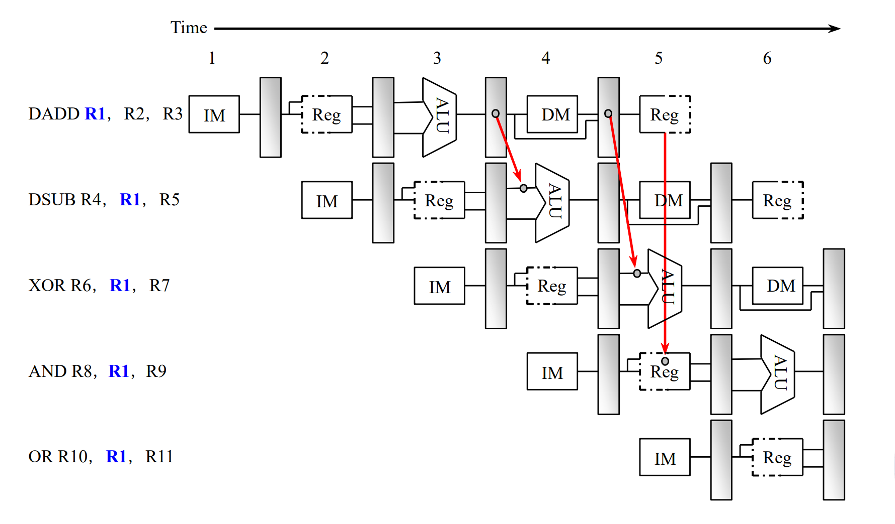
- Write After Read (WAR)
FDIV.D F2,F6,F4 FADD.D F6,F0,F12 - 可以更换F6对应的寄存器
Name Dependences（在乱序流水线中可能出现冒险）
-
Write After Write (WAW)
FDIV.D F2，F0，F4 FSUB.D F2，F6，F14 -
不能更换F2对应的寄存器，存在写入顺序的问题
Name Dependence,顺序流水线不会引起数据的冒险，但在乱序流水线会发生冒险的问题
- code scheduling to avoid stalls
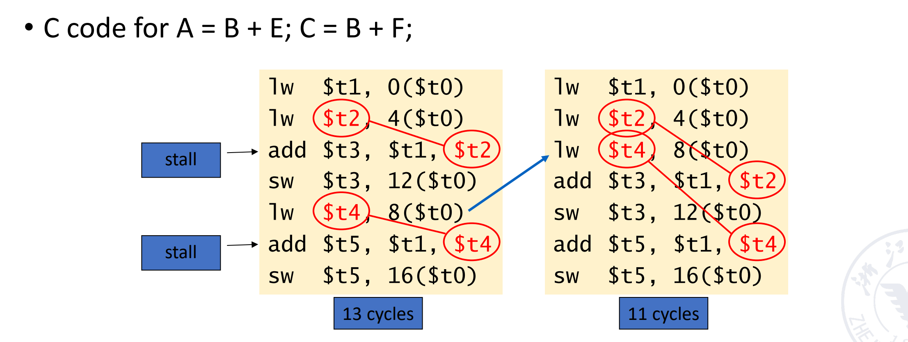
- 静态调度：程序还没有运行，编译器在程序编译阶段重新排列指令顺序，减少等待时间
- 动态调度：程序运行时，处理器为我们优化了代码
4.3 control hazard
- 定义：控制冒险发生在流水线遇到分支指令时，必须等待分支指令的结果才能确定下一步的执行路径。如果分支预测错误，流水线必须丢弃错误路径上的指令
为了减少分支指令带来的stall，我们使用分支预测的技术 - static branch prediction - 基于经典的分支行为 - branch-taken - branch-not-taken - dynamic branch prediction - Hardware measures actual branch behavior - 根据历史记录(如上一次分支结果)，预测下一次分支 - 我们认为未来的行为将会延续现在的趋势
5. Data Hazards(4.2)
6. Control Hazards
在RISC-V中，有无条件跳转jal,jalr和有条件跳转beq,bne,blt,bge,bltu,bgeu
可以在ID阶段就算出要跳转的目标地址，同时进行分支预测。只有预测错误时才需要stall来flush掉之前的结果，预测成功不需要stall
6.1 Static Branch Prediction
- Predict-not-taken
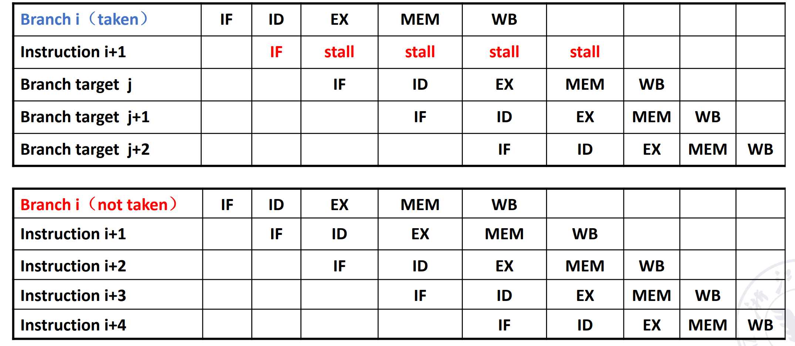
- 预测错误停顿一个周期，预测正确不停顿
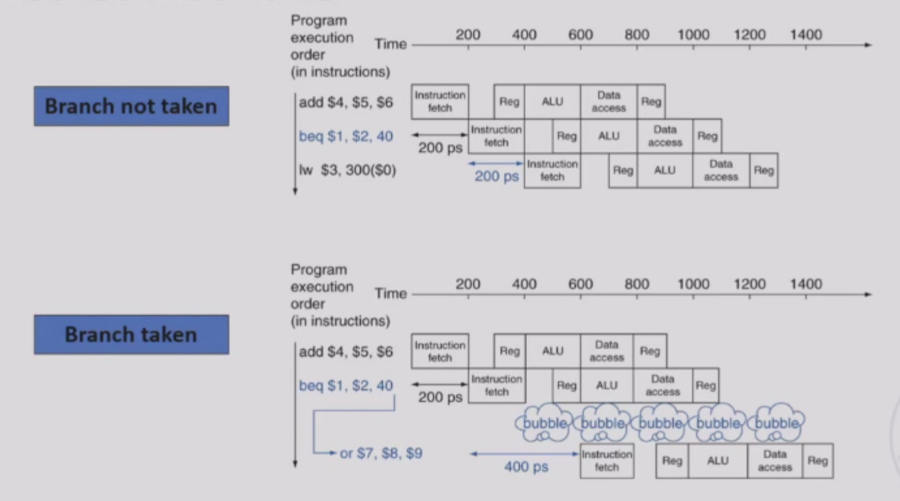
-
Predict-taken
-
Data Hazards for branches
- If a comparison register is a destination of 2nd or 3rd preceding ALU instruction
add x1,x2,x3 add x4,x5,x6 beq x1,x4,target - Can solve using forwarding
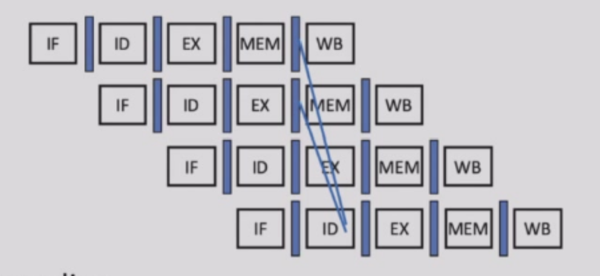
- If a comparison register is a destination of preceding ALU instruction or 2nd preceding load instruction
lw x1,0(x2) add x4,x5,x6 beq x1,x4,target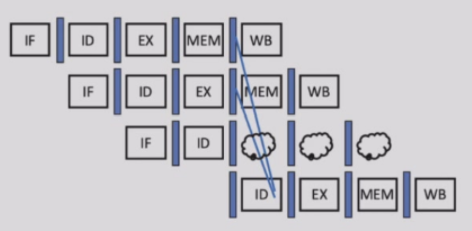
- If a comparison register is a destination of immediately preceding load instruction
- Need 2 stall cycles
lw x1,0(x2) beq x1,x0,target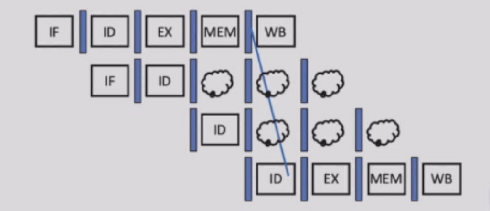
- Need 2 stall cycles
6.2 Dynamic Branch Prediction
- In deeper and superscalar pipelines, branch penalty is more significant在更深的流水线和超标量架构中，banch penalty的影响更显著
-
Use dynamic prediction
- Branch prediction buffer(branch history table)
- Indexed by recent branch instruction address以近期分支指令地址作为索引
- Stores outcome(taken or not taken)
- To execute a branch
- Look up the branch prediction buffer
- Check table,expect the same outcome
- Start fetching from fall-through or target
- If wrong,flush pipeline and flip prediction
-
Branch history
- 1-bit predictor
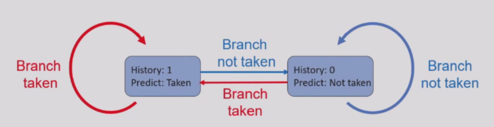
- Inner loop branches mispredicted twice
- 容易在分支频繁变化的时候产生错误预测
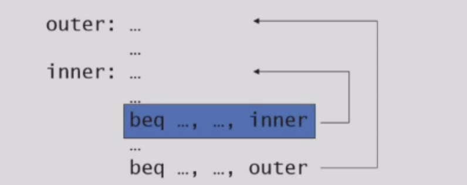
- Mispredict as taken on last iteration of inner loop
- Then mispredict as not taken on first iteration of inner loop next time around
- 2-bit predictor
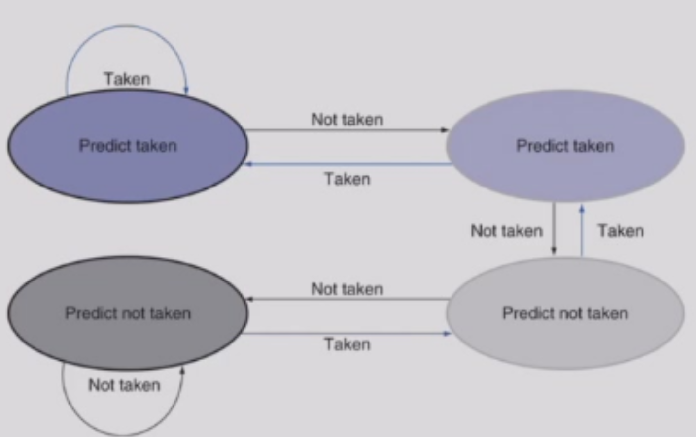
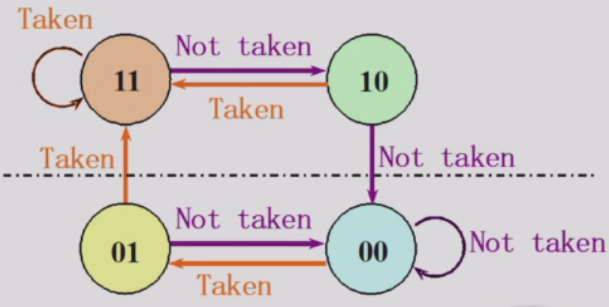
- 1-bit predictor
6.3 Advanced Techniques for instruction Delivery and Speculation
- Increasing Instruction Fetch Bandwith
- Branch-Target Buffers(BTB):放预测的PC值，取指时在buffer中取。与TLB表类似，在未找到对应PC的情况下更新表的内容
- BTB是一个基于分支指令地址索引的表，存储了分支指令之前的执行结果。
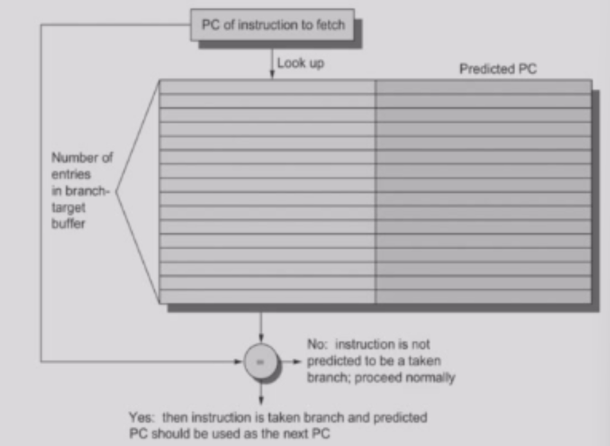
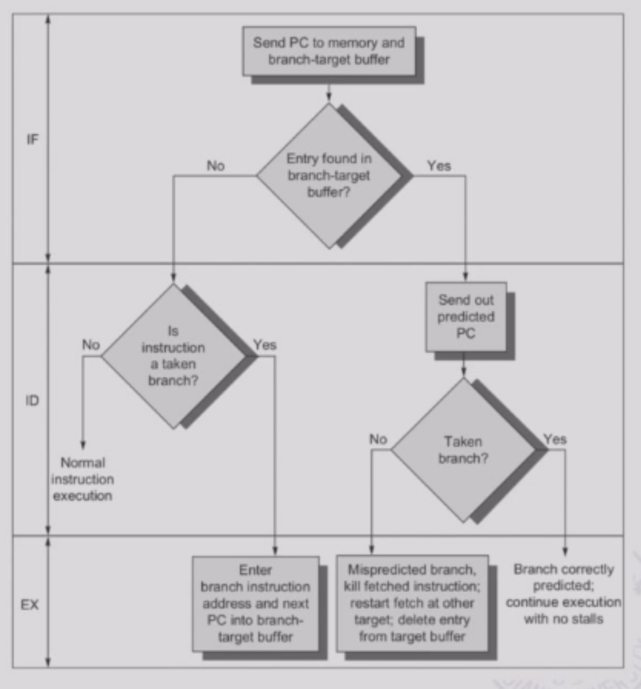
- BTB存储了分支指令和目标地址
- 如果在表中找到了对应的项，那么立即取出对应的目标地址，作为下一个时钟周期IF阶段的PC，也就是说，如果表中有对应项，我们采取的预测方式是Assume Branch Taken
- 分支预测正确：处理器从BTB获取目标地址，并直接预取目标位置的指令。这大大提高了分支跳转的速度，减少了处理器在预测正确时的延迟
- 分支预测错误：如果分支预测错误，则需要清空流水线并更新BTB，将该PC对应的表项从目标地址缓存表中删除
- 如果在表中没有找到对应的项，那么我们采取的预测方式是
Assume Branch Not Taken- 预测错误，清空已经执行的指令，并且下一个时钟周期使得目标地址进入IF阶段。与此同时，将这条分支指令的PC值以及对应的目标地址填入目标地址缓存表中，在表中新增一项
- 如果分支没有执行正常情况，继续执行指令流即可
- Specialized Branch Predictors:Predicting Procedure Returns,Indirect Jump and Loops Branches
- Integretd Instruction Fetch Units(集成指令提取单元):从内存中提取指令并将其传递给处理器的执行单元
- 集成指令预测
- 指令的提前取指
- 指令内存的访问和缓存
- 在现代多发射处理器架构中，指令提取不再是一个简单的单级流水线阶段，而是需要更复杂的实现
- Integretd Instruction Fetch Units(集成指令提取单元):从内存中提取指令并将其传递给处理器的执行单元
Calculating the Branch Target
- 即使有了分支预测模块，仍然需要计算目标地址
- taken branch需要有一个周期的penalty
-
Branch Target Buffer
- Cache or target address
- Indexed by PC when instruction fetched
- If hit and instruction is branch predicted taken, can fetch target immediately
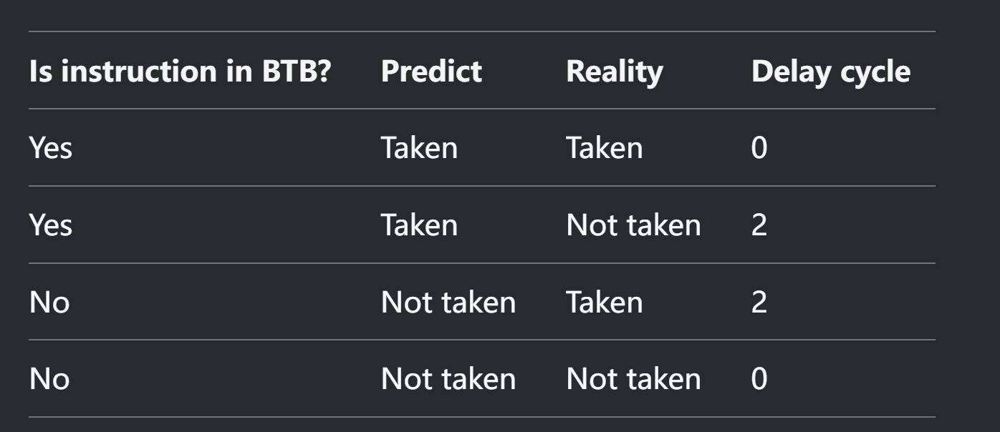
Delay 2:清空指令并更新BTB各占一个周期
- BTB的更新与维护
- 表加入机制：当一个新的分支指令出现其目标地址不在BTB中时，处理器会将这个分支指令和它的目标地址存入表中
- 表移除机制：如果一个分支指令不再跳转(即不被执行)，处理器会从BTB中移除该条指令的条目，以腾出空间给其他分支指令
7. Schedule of Nonlinear pipelining
对于非线性流水线，功能部件可能经历多次，有调度问题
- 纵轴代表不同的功能部件，横坐标表示拍数。即每一拍需要用到的功能部件
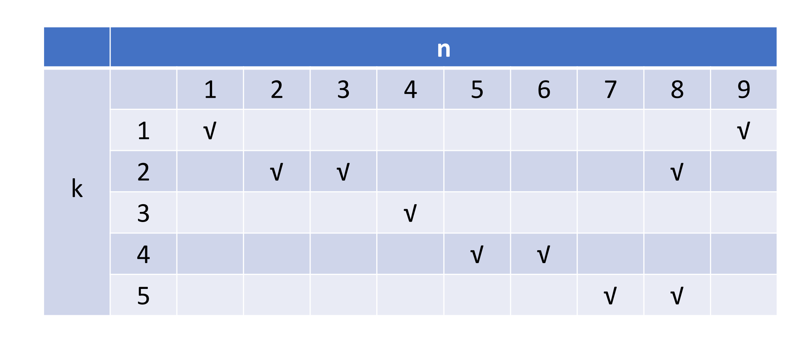
算法步骤：
- Initial conflict vector:使用二进制表示，各个位置取每一拍存在冲突的并集。如果是1，则从图存在，否则冲突不存在
- 第一个部件，隔8拍会产生冲突；第二个部件：1.5.6；第三个部件：无；第四、五个部件：1
- 将对应八位二进制数的1.5.6.8位设为1，其他为0，得到了初始的冲突向量10110001
- conflict vector
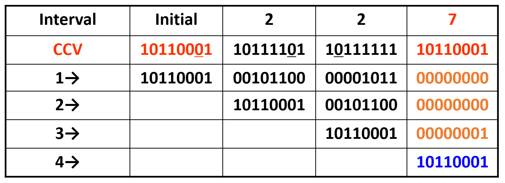
对于第三列，隔两排进下一条指令，我们就把冲突向量向右移动两位(高位补0)，得到了新的冲突向量，并和本来的冲突向量做或运算得到CCV。(注意这里最左侧一列表示向右移动了多少次)
找到了一个循环调度：2-2-7
-
State transition graph
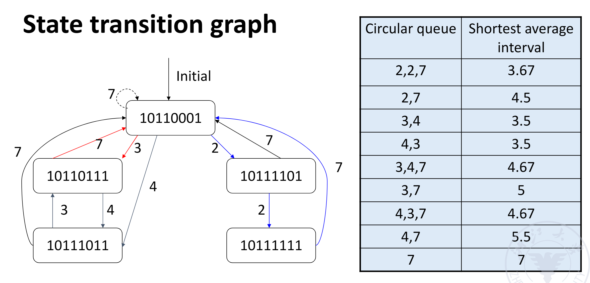
-
Circular queue：只要形成回路即可，没有一定规定需要从初始状态回到初始状态
- Shortest average interval：做的总移动数除以移动次数
Schedule of Nonlinear pipelining
- 画出冲突向量，位数由发生冲突间隔的最多周期决定。这道题目中会发生冲突的依次是间隔8,1,6,5拍，所以位数为8，对应的冲突向量也就是10110001。 - 找到冲突向量中为0的位，这些位是不会造成冲突的那些位，分别向右移动2.3.4.7位获得然后与初始状态做或运算，得到新的冲突向量，也就是确定了一个新的状态
graph TD
A[10110001] --> |2| B[10111101]
A --> |3| C[10110111]
A --> |4| D[10111011]
A --> |7| A- 第二层状态下采用同样的方法找到新的冲突向量，一定要注意每次做或运算时都要与初始的初始状态做或运算
graph TD
A[10110001] --> |2| B[10111101]
A --> |3| C[10110111]
A --> |4| D[10111011]
A --> |7| A
B --> |2| E[10111111]
B --> |7| A
C --> |4| C
C --> |7| A
D --> |3| C
D --> |7| A
C --> |4| D
E --> |7| A- 依次类推直到状态转移图的状态不会再发生变化为止
- 得到状态转移表
| circular queue | shortest average interval |
|---|---|
| 7 | 7 |
| 2,7 | 4.5 |
| 2,2,7 | 3.67 |
| 4,7 | 5.5 |
| 4,3 | 3.5 |
| 4,3,7 | 4.67 |
| 3,4 | 3.5 |
| 3,4,7 | 4.67 |
| 3,7 | 5 |
Warning
只要能构成循环回路即可，不一定要回到初始状态